I work as a Senior Software Engineer and also as a Technology Entrepreneur and E-Commerce Consultant
I was born in Scotland, United Kingdom, where my mother was from, but I am a US Citizen
I had a father who was a career US Navy Petty Officer, he met and married my mother while stationed at Holy Loch, Scotland with the US Navy
I relocated to the Space Coast of Florida in 1996, from Saint Marys, Georgia, 27 years ago
I like the activities of Scuba Diving, Surfing, Blogging, and being a Unix/Linux Code Geek
I recently worked in the NASA Artemis program, developing C++ software for the launch systems of the NASA SLS Rocket
I previously worked in the NASA Space Shuttle Program as Computer Science Staff with United Space Alliance LLC
I have a Bachelor of Science Degree in Information Systems, Computer Science with a minor in Business, from Florida Tech, and also an Associate Degree in Engineering from Georgia Military College
I completed 2 years of Electrical Engineering Study at Georgia Southern University
I am an honorably discharged veteran of the US Navy Reserve. I was in the Navy Seabees. I was called up to active duty after 9/11
Anyone is welcome to contact me, my username on Tilde is mworkman72, feel free to send email also, and also feel free to send me a friend request on facebook.
Artemis Program SLS Moon and Mars Rocket and Mission
 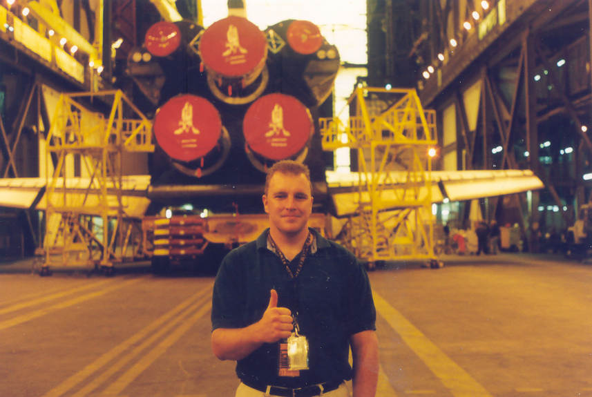
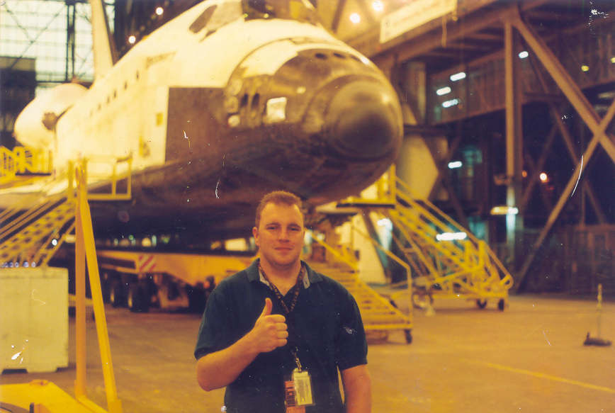
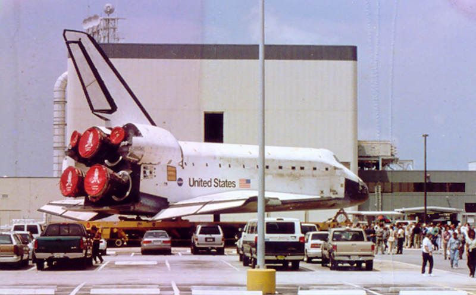
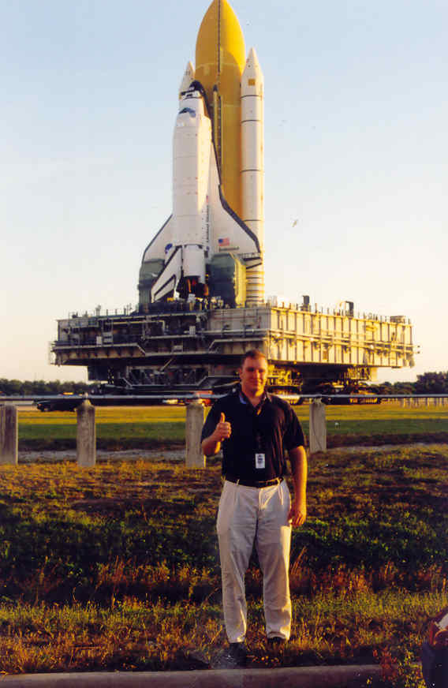
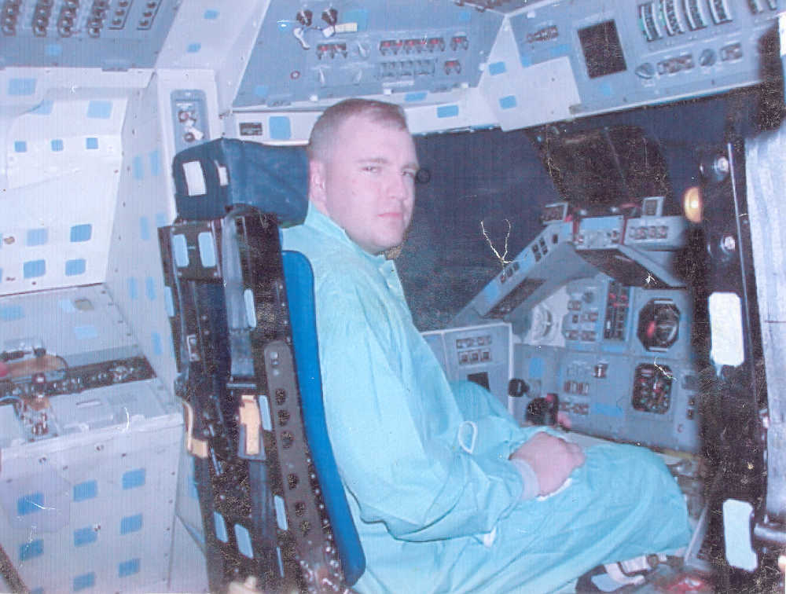
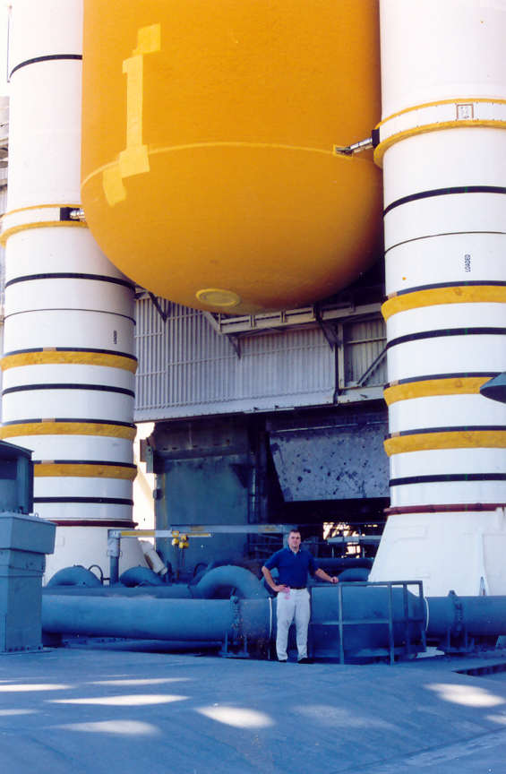
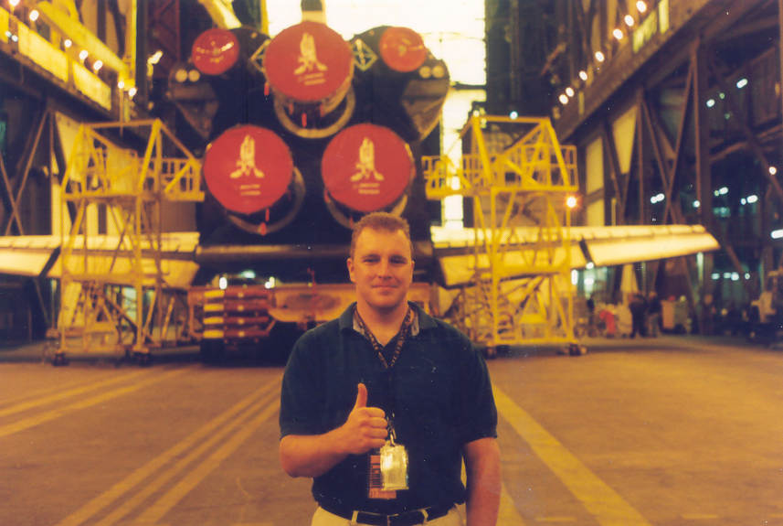
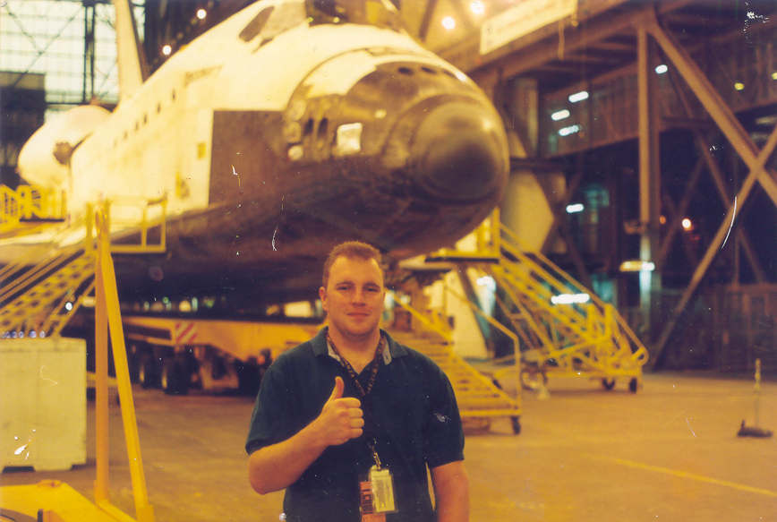
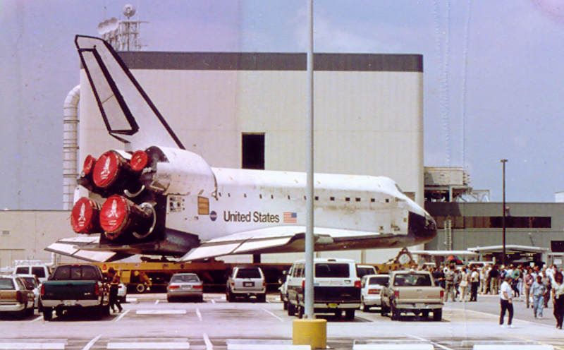
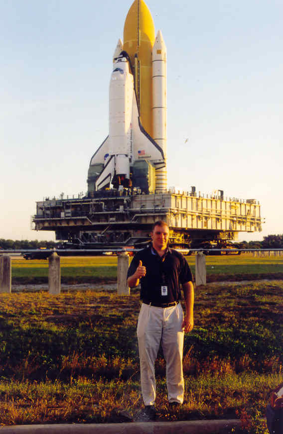
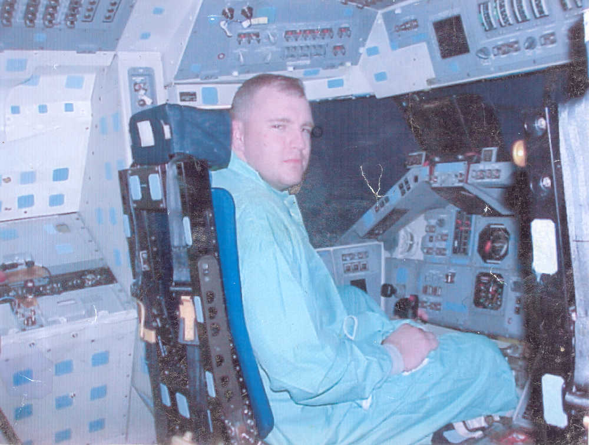
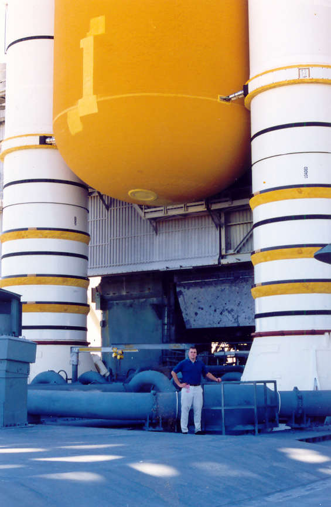
OpenBSD Unix and Kali Linux side by side, good use of older dell laptops
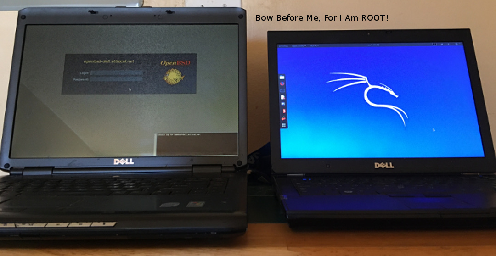I am a long time software engineer and technologist. I had my first start in software programming the Commodore 64 when I was 13, and had my first professional software job in the Space Shuttle program working for a NASA contractor, I had an HP-UX Unix workstation at this job and was involved in developing shell scripts and C/C++ software. The Unix workstations ran CDE (Common Desktop Environment) which is based on X Windows, and is now obsolete, having been mostly replaced with Gnome. I was involved in developing C programs with X Windows/Motif that used linked lists and Oracle Pro-C, which let you embed database SQL statements in the C code. These worked with the Shuttle Data Center (SDC), an Oracle data warehouse hosted on Digital Unix Servers. Oracle made a small fortune off the tax payer building the Shuttle Data Center (SDC), which contained all the launch data for the Space Shuttle. Later I was involved in replacing the X Windows/Motif applications with Java Swing and JDBC, which was a big improvement. And also I was later involved in migrating the HP-UX workstations to be replaced with Red Hat Linux workstations, Red Hat also made a tidy sum from the tax payer with that project.
One time at this job, I developed a C program to run on the HP-UX Unix workstations that had like 100 pointers in it! As anyone with C experience knows, C pointers can be very fickle and difficult to work with, I was always worried the application would fail in some spectacular manner, but it did not, it worked good and the Space Shuttle aerospace engineers who used it were very pleased with it.
Michael G. Workman August 21, 2022